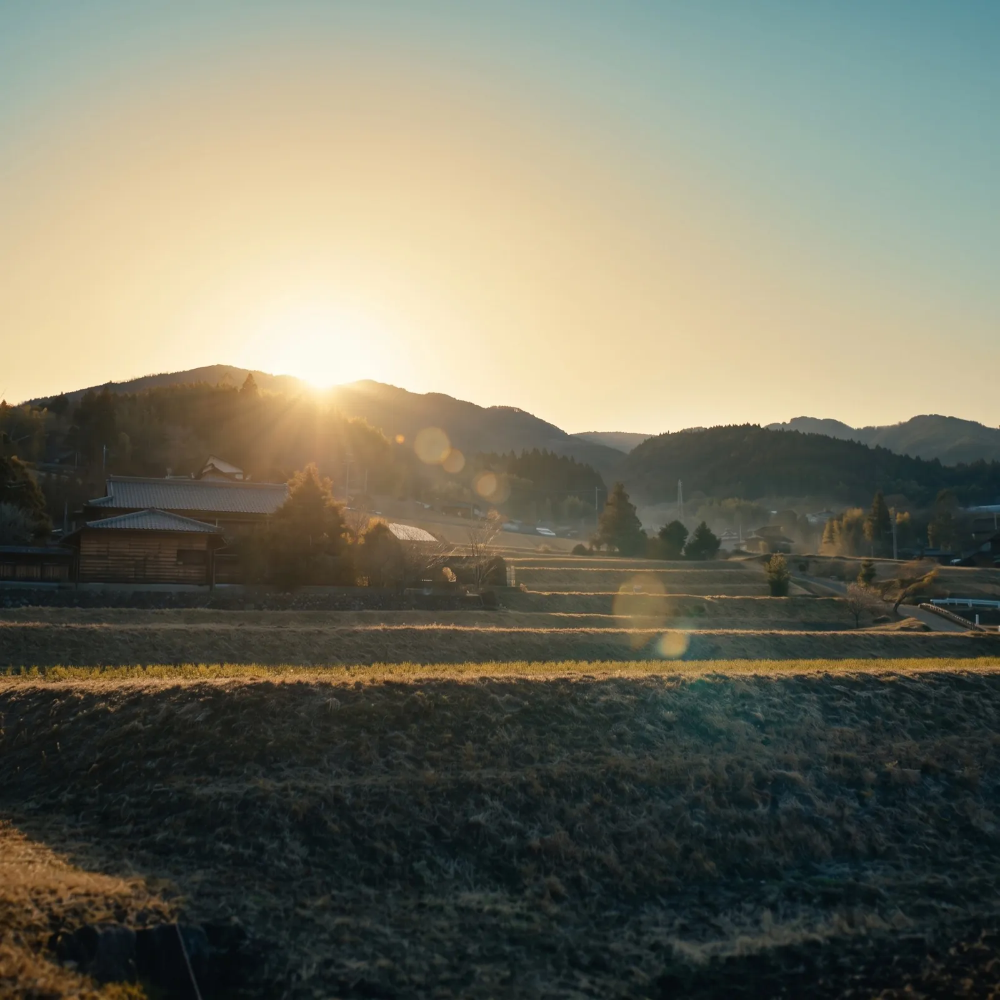

提供中
企業の森づくり
特定の森林の手入れを継続して支援し、地域の森林組合・林業事業体に仕事をつくります。活動の記録や報告も、説明できる形で整えます。
 ネイチャーキャピタル・リアルエステイトNature Capital Real Estate
ネイチャーキャピタル・リアルエステイトNature Capital Real Estate

企業・個人の方へ
手入れを担う人や資金が足りない山がある一方で、自然や地域と関わりたい企業や人がいます。その両方をつなぎ、地域に仕事が残る形で森林と関わる方法をご提案します。
大切にしていること
森林の価値は、手入れを続ける人と仕組みがあってはじめて保たれます。私たちは、所有者の状況や地域の事業者の体制を確認したうえで、企業や個人の方が無理なく関われる形を一緒に考えます。
関わり方
提供中
特定の森林の手入れを継続して支援し、地域の森林組合・林業事業体に仕事をつくります。活動の記録や報告も、説明できる形で整えます。
提供中
J-クレジットなど森林由来の環境価値について、日本GXグループと連携してご相談を承ります。創出量や認証の結果を事前にお約束するものではありません。
日本GXグループの環境価値の取り組み準備中・ご相談は受付中
山や里山の手入れ・観察に参加できる機会を、地域の受け入れ先と準備しています。個人の方や社員の皆さまの参加にご関心があれば、お気軽にご連絡ください。
準備中・ご相談は受付中
森林を購入・賃借して活用したい方のご希望をお伺いし、条件に合う山林の情報があればご案内できるよう準備しています。
※ いずれも個別のご相談から始めます。取引の媒介・契約が必要な場合は、提携する宅地建物取引業者などとの対応を検討します。
お問い合わせ
ご関心のある関わり方、地域、時期など、決まっている範囲でお知らせください。
ウェブで問い合わせる →Googleフォームが開きます。入力内容は日本GXグループのプライバシーポリシーに基づき取り扱います。